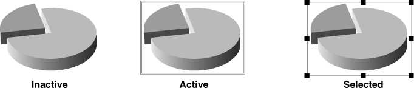
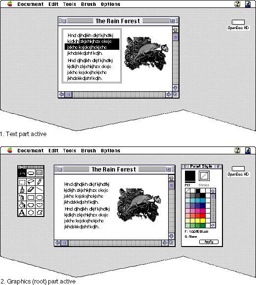
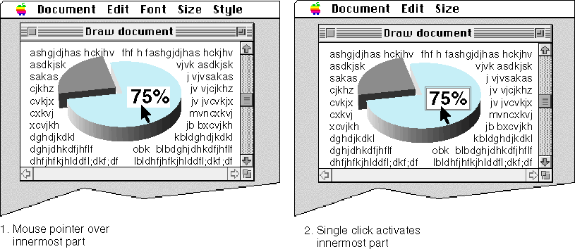
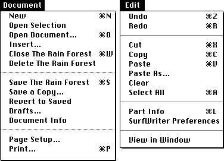

Event Handling
Most part editors interact with the user primarily by responding to user events. User events are messages sent or posted by the operating system in response to user actions, activation or deactivation of a part or window, or messages from other event sources. Based on information in a user event, a part editor might redraw its part, open or close windows, perform editing operations, transfer data, or perform any sort of menu command or other operation.OpenDoc has several built-in event-handling features that help your part editor function properly within a compound document. For example, instead of polling for events, as a typical application does, your part editor acts when notified by OpenDoc that an event has occurred.
This section notes some of OpenDoc's event-handling features; for more information on user events, see Chapter 5, "User Events."
The Document Shell and the Dispatcher
Part editors respond differently to user events than conventional applications do. Part editors do not receive events directly; OpenDoc receives them and dispatches them to the proper part.Because they are not complete applications, and because they must function cooperatively, part editors run in an environment that itself handles some of the tasks that conventional applications typically perform. That environment is called the OpenDoc document shell; it is a shared library that handles certain application-level tasks and provides a shared address space for each OpenDoc document, within which part editors manipulate document content.
Whenever an OpenDoc document is opened, OpenDoc creates an instance of the document shell. The shell creates global objects and uses them to open the document. OpenDoc then loads the part editors for all parts that appear in the document window; the part editors read in the data of their own parts. The shell receives both user events and scripting-related events (see "Scripting Support"). The shell uses the OpenDoc dispatcher to dispatch those events to the proper part editors, based on event location and ownership of shared resources such as menus.
The document shell is described in the section "The Document Shell". How the dispatcher sends events to parts is described in the section "How User Events Are Handled".
Handling User Commands
As a result of user actions or commands, OpenDoc interacts with part editors to perform these common application activities: part activation, menu handling, and undo. In general, the document shell receives events and passes the appropriate information to the proper part.Activation and Selection
In response to user actions, individual parts in a document become active and thus editable. A part is active if it possesses the selection focus; the user can select and modify its contents in this state. The active part may also possess the menu and keystroke focus; see "Focus Transfer" for more information on foci.Parts activate themselves in OpenDoc, and the individual parts in a document must cooperate to transfer the selection focus among each other as appropriate. Note that when a part is not in the active (editable) state, it need not be idle; multiple parts within an OpenDoc document can perform different tasks at the same time.
Switching among OpenDoc documents, and among individual parts within a document, can involve a much less intrusive context switch than switching from one conventional application to another. Users are less likely to be irritated, because the wait before they can edit a newly activated part is less likely to be perceptible.
The active state is different from the selected state. When a part is selected, its frame is made available for manipulation. Because embedded frames are considered to be content elements of their containing part, they can be selected and then moved, adjusted, cut, or copied just like text, graphic objects, or any other content elements. Thus, whereas an active part is manipulated by its own part editor, a selected part is manipulated--as a frame--by its containing part. Figure 1-11 shows the visual differences among the inactive, selected, and active states of an embedded part.
Figure 1-11 Inactive, active, and selected states of an embedded part

An inactive part, one that is not being edited, need not have a visible frame border. A selected part's frame border is drawn by the containing part; its shape typically corresponds to the frame shape, and its appearance should follow guidelines for selected frames specified in the section "Selected Frame Border". An active part's frame border is drawn by OpenDoc; its shape corresponds to the active shape of the embedded part's facet, and its appearance is fixed for each platform.When a part becomes active, more than its own frame border changes. Figure 1-12 illustrates some of the visual changes to a window caused by part activation.
Figure 1-12 Inactive and active states of a graphics part

In the figure, the text part is active first. OpenDoc has drawn the active frame border around its frame, it has a highlighted selection, and it displays its own menus. Then the text part becomes inactive and the graphics part becomes active. The text part removes its menus and its highlighting. The graphics part displays its own menus and also displays two palettes, in separate windows. (OpenDoc in this case does not draw the active border around the graphics part's frame, because the graphics part is the root part.)Activation generally occurs in response to mouse clicks within the area of a frame (specifically, within the area of a facet's active shape). OpenDoc follows an inside-out activation model, in which a single mouse click causes activation of the smallest (actually, the most deeply embedded) enclosing frame at the pointer location. In the case of a deeply nested embedded frame, as shown in Figure 1-13, a single click within the frame of the most deeply embedded part activates that part and allows the user to start editing immediately.
Figure 1-13 Inside-out activation of a deeply embedded part

By contrast, some compound-document architectures use an outside-in activation model, in which the user selects the outermost (nonactive) frame with one click and activates it with the second click. Thus, the user may have to click many times to activate a deeply embedded part. In Figure 1-13, for example, the user would have to click four times to start editing the label "75%".Despite the advantages of inside-out activation, a containing part may at times not want an embedded part to be activated when the user clicks within its frame; it may instead want the part to become selected. For example, when you want the user to be able to move--but not edit--a part embedded within your part, you would rather have it selected than activated by a mouse click. OpenDoc allows you to specify this behavior for an embedded part by placing its frame in a bundled state. A bundled frame acts like a frame with outside-in selection, in that a single click selects the frame. (However, unlike with outside-
in selection, subsequent clicks do not then activate the part; you have to unbundle it before it can be activated.)Your part does not receive window-activation events directly. The OpenDoc dispatcher notifies your part when its window becomes active or inactive, as described in the section "Handling Activate Events". It also notifies the containing part, rather than the embedded part, when an embedded part should become selected. For more information on the user interface involved with part selection and activation, see the sections "Activation" and "Selection".
Menus
Menu organization and menu handling are different on different platforms. OpenDoc encapsulates certain aspects of menu behavior in a platform-neutral menu bar object. That object gives your part editor access to its own and to OpenDoc's menus, and allows you to convert menu items to a standard set of command IDs.The Document menu is basic to the OpenDoc user interface. It replaces each platform's application-oriented menu; on the Mac OS platform, it replaces the File menu. The contents of the Document menu reflect the OpenDoc document-
centered approach. For example, there is no Quit command; it is replaced by a Close command. In OpenDoc, the user closes documents rather than quitting applications.The Edit menu is another standard menu; it permits the user to operate on your part or its contents when it is the active part. Figure 1-14 shows an example of the Document menu and the Edit menu for the Mac OS platform, as displayed when the fictional part editor "SurfWriter" is the editor of the active part.
Figure 1-14 The Mac OS Document and Edit menus

Most of the items in the Document menu are handled by the document shell; see "The Document Shell and the Document Menu" and "The Document Menu" for more information.Your part editor can add menus of its own, and it can modify--within limits and according to certain rules--the standard OpenDoc menus. See "Menus" for more specifics.
Undo
Applications on many platforms provide a form of undo, which allows a user to reverse the effects of a recently executed command. OpenDoc provides better support for undo than do most current platforms, in at least two ways:OpenDoc support for undo is described in more detail in Chapter 5, "User Events."
- The undo action can cross document boundaries. This is important because a single drag-and-drop action can affect more than one part or document.
- OpenDoc allows multiple sequential undo actions. The user can undo multiple sequential commands, rather than only one.